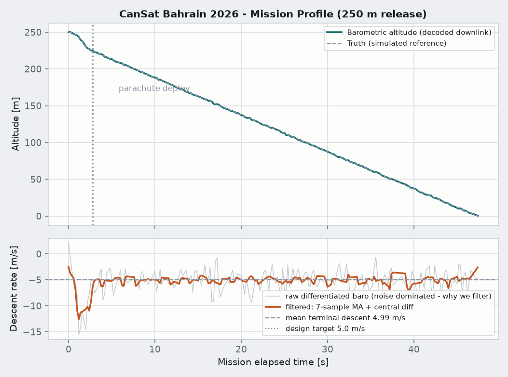
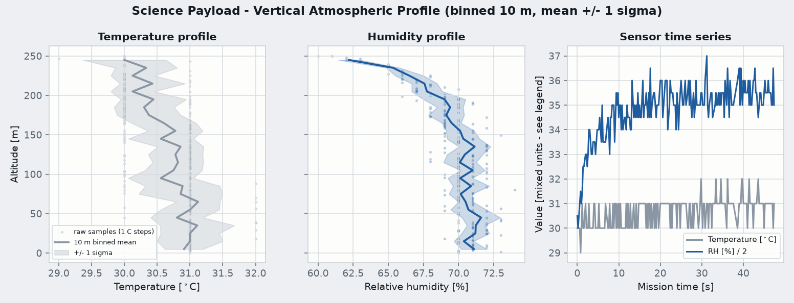
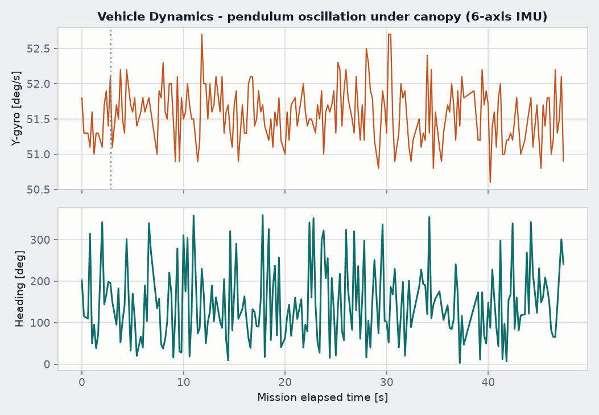

A satellite the size of a soda can
Your team designs, builds, tests and flies it. Every subsystem a real satellite carries — power, communications, sensors, payload and a parachute recovery system — has to fit inside a 66 mm cylinder, 115 mm tall. On launch day a Bahrain Space Agency engineer drops it from a tower. It has to collect and transmit data on the way down, land safely, and then you present the mission to a jury of BSA engineers.
- Organisers
- Bahrain Space Agency with the American University of Bahrain
- Team
- Exactly five university students, plus one supervisor
- To register
- A registration form plus a Letter of Endorsement signed by your Dean
- Commitment
- About eight hours a week, 25 October to 12 December
- Launch day
- 12 December 2026
- Kit
- Free: Arduino Nano, RGB camera, barometer, temperature/humidity sensor, six-axis IMU, magnetometer, 433 MHz LoRa radio, breadboard, battery case
Two thirds of the score is science and communication, not flight
Scientific value, the largest single block. Whether your objectives are worth answering, whether your measurements actually answer them, and whether you understand the science behind your own mission — that last one is tested live in the three minutes of questions after your presentation.
Professional competencies is a quarter of the total. Teamwork, adaptability, presentation skill and technical reporting. A simpler mission that is documented and defended cleanly beats a clever one nobody can explain.
Outreach is cheap points. A project page, posts, media coverage, a talk at the university. Ten per cent for work that takes an afternoon.
Seven weeks from workshop to launch
Between each stage sits a design review. Reviews are gates: the jury can send you back to fix things, and the review on 2 December is the one that authorises your flight. Each one needs its own presentation on the official template.
Registration
Five students, one supervisor, one Dean-endorsed endorsement letter, one form. Everything else depends on this.
Induction and workshop
Collect the kit at AUBH, learn the hardware. The Mission Concept Review kicks off the same day — and the MCR deck is due three days later.
Design, build, integrate, test
Four reviews on a compressed schedule: Mission Concept (28 Oct), Preliminary Design (11 Nov), Critical Design (18 Nov), then System Integration and Flight Readiness (2 Dec) with the Pre-Launch report.
Launch and finals
Arrive flight-ready, hand the CanSat to the launch expert, fly it, recover it, and present the results in launch order. Seven minutes, then three minutes of questions. Every team member speaks.
A complete mission, simulated and decoded end to end
To answer "can AI actually help with this?" we built the thing instead of talking about it. One full mission was run: the parachute sized from the drag equation, the flight simulated, the sensors modelled as the real hardware behaves, the readings packed into the exact 34-byte frames the firmware puts on the radio, 12 per cent of those packets thrown away and 3 per cent corrupted, and then the whole stream decoded back by a ground station with checksums. Every number below came out of that decoding — not out of the simulation's own notes.
| Measurement | Value | Why it matters |
|---|---|---|
| Parachute diameter | 0.579 m | Sized by solving the descent equation for a 350 g payload |
| Terminal descent, measured | 4.99 m/s | Against a 5.0 m/s design target — the maths and the flight agree |
| Flight time from 250 m | 47.4 s | Sets how much data you can actually collect |
| Peak free-fall rate | 12.6 m/s | The load the canopy has to survive |
| Deployment detected at | 2.8 s | Against a 2.0 s timer — the filter adds measurable lag |
| Measured lapse rate | −0.386 °C/100 m | True value is −0.65: the sensor's own lag biases your science |
| Link success rate | 87.4 % | Through 12 per cent loss and corrupted frames |
| Wind drift at landing | 115 m | How far away you have to walk to recover it |



Change the release altitude, the deployment timer or the canopy size in
code/cansat_mission_demo.py and re-run it — the telemetry, the figures and
this replay are all rebuilt from that single run.
Press play to fly the mission, or drag the slider to scrub through it. Links: the replay on its own page.
The plan, week by week
Blocking first
- Recruit exactly five students and one supervisor by 17 October.
- Get the Letter of Endorsement signed by the Dean or higher.
- Submit the registration form — nothing else can start without it.
- Email
events@bsa.bhfor the milestone presentation templates. The guidelines reference an Appendix I that was not included in the published PDF.
Then design for the score
- Primary mission: the full descent profile — pressure, altitude, temperature, humidity, attitude, heading, plus images.
- Secondary mission: one thing that produces a measurement, not just photographs. A parachute aerodynamics study or an added air-quality sensor both score, and both are explicitly rewarded as kit enhancements.
- Log to a microSD card as well as transmitting. A lost packet should never mean a lost mission.
- Stand up the outreach page in week one, not week nine.
Watch out for
- The kit lists a LoRa transmitter only. Confirm whether a ground-station receiver is supplied before assuming it is.
- An Arduino Nano cannot drive a normal camera module. This is the single biggest technical unknown — find out the exact model at the workshop.
- Differentiating raw barometric altitude at 5 Hz produces ±15 m/s of noise. Filter before you differentiate, and say so in the review.
- Your temperature sensor has thermal lag that will bias your measured lapse rate by roughly a third. Quantify it or you will misreport your own science.
- Free-fall acceleration and the parachute's braking have almost the same slope. A naive deployment detector will fire at the wrong moment.
Read the full plan — role split for five people, the technical architecture, a week-by-week schedule, and the questions to send the organisers before you start.
Yes, you can use AI. Here is exactly where it helps and where it costs you.
The competition guidelines place no restriction on the tools you use, and the jury grades your result and your understanding of it. Everything on this page — the physics, the packet layout, the checksums, the filtering, the plots, the interactive replay — was produced by an AI in a single sitting. That is the honest answer to whether it helps.
Where it earns its keep
- Learning six sensor datasheets fast, including their error characteristics.
- Firmware scaffolding, telemetry packet formats, checksums, logging.
- The analysis code that turns a CSV into labelled, unit-correct graphs.
- Parachute sizing, drag maths, structural calculations you can then verify.
- Turning your own notes into a review-ready structure, and editing the report.
- Generating the hostile judge questions for rehearsal. Three minutes of live questions is a quarter of your score.
Where it will cost you marks
- Scientific understanding is judged in person. If nobody on the team can derive the equation behind the design, that block collapses.
- A report you cannot defend is worth less than a simpler report you can.
- It cannot solder, fit, drop, fly or recover anything. The schedule is a physical testing bottleneck no model shortens.
- It will confidently produce wrong numbers. Every figure it gives you gets checked against the datasheet before it enters a review deck.